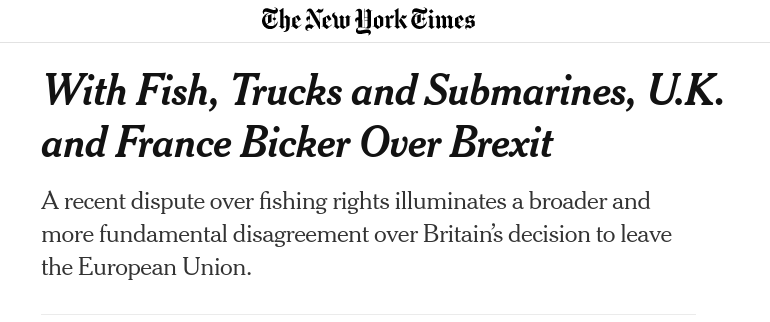

| Round | Group A | Group B |
|---|---|---|
| 1 | Cooperate | Cooperate |
| 2 | Cooperate | Cooperate |
| 3 | Cooperate | Cooperate |
| 4 | Cooperate | Cooperate |
| 5 | Cooperate | Cooperate |
| 6 | Cooperate | Cooperate |
| 7 | Cooperate | Defect |
| 8 | Defect | Defect |
| +15 | +22 |
Today’s Agenda
III. Why is it so Hard to Cooperate with Other Countries?
- Two-level Bargaining Games
Justin Leinaweaver (Spring 2026)
What Happened?
Explaining the Outcome
Group 2
|
|||
|---|---|---|---|
| Cooperate | Defect | ||
| Group 1 | Cooperate | +3, +3 | -2, +5 |
| Defect | +5, -2 | -1, -1 | |
Explaining the Outcome
Explaining the Outcome
Explaining the Outcome
Advocate for policy
Advocate for an election
Vote
Explaining the Outcome
| Name | EC |
|---|---|
| Grant | 2 |
| Miya | 2 |
| Jasper | 0 |
| Corah | 2 |
| Kylei | 0 |
| Isabel | 2 |
| Beau | 2 |
| Owen | 2 |
| Jack | 2 |
| Name | EC |
|---|---|
| Kai | 2 |
| Yevheniia | 2 |
| Topi | 0 |
| Isaiah | 2 |
| Tahrea | 2 |
| Parker | 2 |
| Brianna | 2 |
| Jacob | 0 |
| Bennett | 2 |
| Killian | 0 |
A Two-Level Prisoner’s Dilemma

Level I
The international negotiation between leaders (or their representatives).
Level II
The leader’s negotiation with constituents to accept their international deal.
Level I Win-Sets
The range of outcomes the leader would accept in the international bargain.
Level II Win-Sets
The range of outcomes that could be ratified by domestic institutions.
Why do “larger win-sets make Level I agreement more likely”? (437-439)
Why do leaders benefit from having small Level II win-sets? (440-441)
How do Level II preferences/coalitions explain win-set size? (442-448)
How do Level II institutions explain win-set size? (448-450)
How do Level I negotiators strategies explain win-set size? (450-452)
Assignment for Next Class
Find us a real world case illustrating at least some of the dynamics of Putnam’s Two-Level Game (e.g. domestic politics complicating international bargaining or vice versa).
- Submit APA citation,
- Explain what happened, and
- Explain how it is an example of two-level game dynamics
semester with 2 days
Two-Level Games are Everywhere

Assignment for Next Class
Hopf, T. (1998). The Promise of Constructivism in International Relations Theory. International Security. 23(1), 171–200.